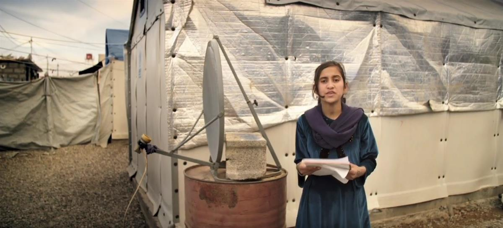
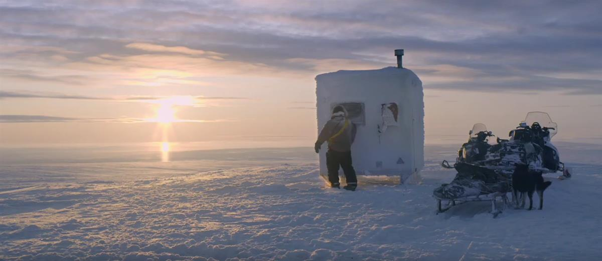
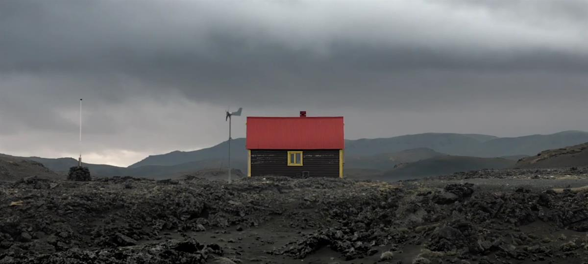
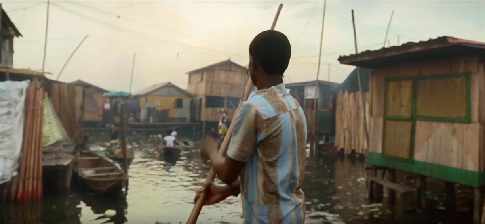

Housing is not just a roof, it is a basic human right. Worldwide, 1.8 Billion people lack adequate housing. UN-Habitat takes action to ensure everyone has an adequate, safe, and affordable home to live in. What makes a home for you? Join us in our Housing For All Campaign and let’s take action together to leave no-one and no place behind: https://unhabitat.org/Housing4All Watch ‚The Human Shelter‘ for free and explores what makes a home all around the world: https://m.youtube.com/watch?feature=y...
SOURCE: UN HABITAT
   
SOURCE: UN HABITAT